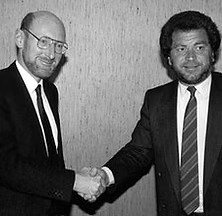
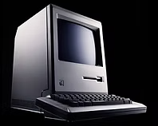
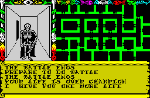
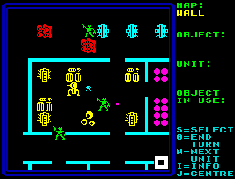

1986 - The Last Picture Show
Taken from zxgoldenyears.org — written by R. Tayler

The Spectrum 128k was finally released in the UK in February 1986. Looking like a beefed-up Spectrum Plus, it featured a dedicated sound chip and an updated version of BASIC to go with its extra memory. Although it represented an improvement upon earlier models, it was not enough to save the ailing company.
In April, Sinclair finalised a deal with Alan Sugar for Amstrad to buy Sinclair Research for £5m, giving it a 60% share of the UK home computer market. Just three years earlier, Sinclair had been valued at £135m. A clause of the contract prevented Sir Clive from ever releasing another computer under his own name.
Amstrad immediately announced plans for a 128K Spectrum with a built-in cassette deck - precisely the sort of machine Sinclair should had released two years earlier. Sinclair's own design for a new Super Spectrum, codenamed 'Loki', was sadly never realised. Following the lead of Commodore's superb Amiga, it would have been built around custom chips to create a next-generation computer, albeit of the 8-bit variety.
An uprated version of the Z80 processor would have raced along at 7Mhz (the same speed as the Amiga and twice that of the Spectrum), memory would have been 128K as standard, expandable up to a dizzying 1Mb, and the number of colours would have soared from 8 to 256. Added to this impressive package would have been Waveform synthesiser sound, dedicated graphics hardware and a built-in tape/disc drive. An intended price of just £200 would have made it a serious rival to the new 16-bit computers.
It was a sorry end for a great British innovator, who would never scale such heights again. Computers had never been Clive Sinclair's greatest passion, but they had provided him the means to work on projects closer to his heart. Perhaps he could have invested those profits in a succession of ever-improving micros and maintained his position as an industry leader, but the eventual fate of Commodore and Atari, who dominated the subsequent 16-bit scene, suggest a happy ending was never on the cards. The rise of the PC and the resurgence of videogame consoles didn't leave much room for idiosyncratic home computers that weren't upgradable or cross-compatible with rapidly standardising technology.

Then again, had Sinclair followed a similar trajectory to Apple and created a credible PC alternative, it might have carved out a niche for itself. This, however, would have required the launch of an effective rival to the Apple Macintosh in 1984. The Mac and its cheapest PC rival cost in the region of £2000, so a system costing even half as much, with serious business capabilities, and featuring a proper keyboard and disc drive, could have been a contender. Instead, Clive Sinclair fluffed his lines, produced the QL and sealed his fate.
Sinclair would later describe his home computers as his proudest achievement. His actions at the time didn't always support this claim, and it's hard to say how much of an impact he had on the modern computing landscape, but for bringing joy to the millions who owned and loved his machines, Sinclair is right to feel proud.
So Little Time
The games industry Sinclair left behind was still alive and well in 1986, even if it had become dominated by a handful of large software houses. The previous year's tendency toward repetition and imitation had become habitual, while the battle for coin-op licenses had turned into a feeding frenzy.
It was starting to look as though programming ability had outstripped creativity. Mel Croucher, a leading home computing figure at the time, echoed the exasperation felt by many in an interview he gave to Crash in April 1986:

"There's a lot of good software around at the moment. It's never been so good, in fact, but it's all derivative. The programming is superb now, but the concepts are all stale. It's all very well to sign mega deals and licence various things, but at the end of the day we are down to the programmer, who in turn relies on the concept. It's great to say 'I've come up with the greatest thing since sliced bread', but sliced bread goes off after a day.
"Last year I was in the company of a very large and well-known software house. Who wrote the programs? In they came, like the Seven Dwarves. These little children came in and were given a shandy or something. The whole company stood or fell on what these little kids could turn out. When I say kids, I mean kids - we were talking fourteen or fifteen year old programmers. They can only be derivative. It is impossible for them to come up with an original idea, absolutely impossible, for even if they do, they haven't got the vocabulary to express it."
Despite this gloomy assessment, software continued to sell well. Most younger gamers, with no memory of the Spectrum’s eclectic early years, knew no better than a succession of near-identical scrolling shooters. It's what they expected, wanted and got.
"As time went on, it ended up being too much like a production line," said Jonathan Smith, one of Ocean's senior programmers. "Three or four months allotted for each project didn't leave much time for development. That's why all those Ocean games look and play the same. I think Terra Cresta took about a month to write, and it shows."
The Final Hurrah
Imagine and Elite spent the year buying up the conversion rights for Konami and Capcom games respectively. Imagine released Mikie, Green Beret and Ping Pong, and from Elite came Ghosts n' Goblins, Paperboy and Commando.
Ocean, which owned and ran Imagine, concentrated on tie-ins rather than conversions: Batman, Cobra, Highlander, Knight Rider, Miami Vice, Platoon and Transformers to name but a few. They were a mixed bag, the best being those where ace programmers Jonathan Smith (Cobra) and Jon Ritman (Batman) were involved.

Classy work was still being done elsewhere. Swords & Sorcery, a fantasy RPG from PSS, had been greatly delayed but offered groundbreaking features, such as a first-person dungeon and artificial intelligence. Ultimate reused its now-familiar 3D graphics in Gunfright, prompting more grumbles about game design going stale, but it was extremely playable all the same.
West Bank from Gremlin Graphics was a offbeat shooter that tested the reflexes. Hewson, who rarely released a bad game, produced a pair of excellent shoot ‘em ups: Quazatron, which put you in control of a killer droid on search-and-destroy mission, and the pixel-perfect Uridium, which set a new standard for the genre that was only matched by FTL’s sublime and speedy Light Force.
Activision resuscitated the ailing adventure genre with the attractive, atmospheric Mindshadow. Other top-notch adventures to appear this year were Price of Magick and Worm in Paradise by Level 9, and Melbourne House's Lord of the Rings. These sophisticated text-and-graphics affairs were among the last great examples of their kind to appear on the Spectrum

Mel Croucher’s ID was an eccentric, text-based diversion that required the player to coax and cajole a frightened personality into revealing details of its past. Domark's Splitting Images, based on the old sliding puzzle concept, was both unconventional and familiar. One of the most visually impressive releases of the year - and on the Spectrum to date - was Realtime's Starstrike II. It was a reworking of Atari coin-op classic Star Wars, but never had it been done so well.
On the frontline of strategy games, the standout title was Rebelstar, which put the player in charge of a squad of troops breaking into a lunar base. Author Julian Gollop stuck with turn-based combat in Laser Squad a couple of years later, and the acclaimed X-Com series for the PC.
Rebelstar, which sold for a mere £1.99, evidenced the improving quality of budget titles. The gap in the market previously held by small, innovative firms was now dominated by companies selling cassettes for pocket money prices - principally Mastertronic, Firebird and a new company that would soon make a big impact: Codemasters.
Our Work Here is Done
This uptick in quality wasn't to last, though. By 1987, growing competition from 16-bit computers would make budget software more popular and plentiful, but overall standards dipped. Meanwhile, full-price games tended ever more towards conversions and unimaginative tie-ins. Support for the Spectrum would remain strong for a couple more years and some high-grade, original titles continued to arrive. By the end of the decade, however, interest in the platform was dwindling fast. Magazines that once overflowed with enthusiasm for the Spectrum and speculated excitedly about its future were just emaciated vehicles for cover tapes.
Amstrad pulled the plug on the Spectrum in 1992 and from the start of the following year software companies stopped accepting any new Spectrum games from developers. In July 1993, the computer got its last release (Admiral Software's Dr Who: Dalek Attack), although the signing of its death certificate probably came with the release of Your Sinclair's final issue in September 1993.
But let us not dwell on the sad twilight of the ZX Spectrum's existence. Instead, let's celebrate its golden years, when it ruled the roost and brought so much pleasure to those lucky enough to have owned one.